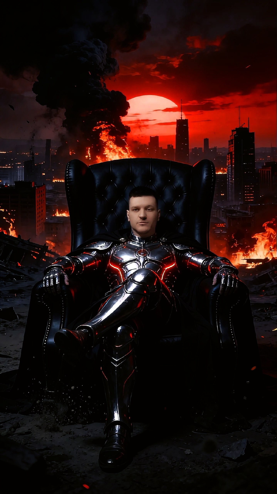
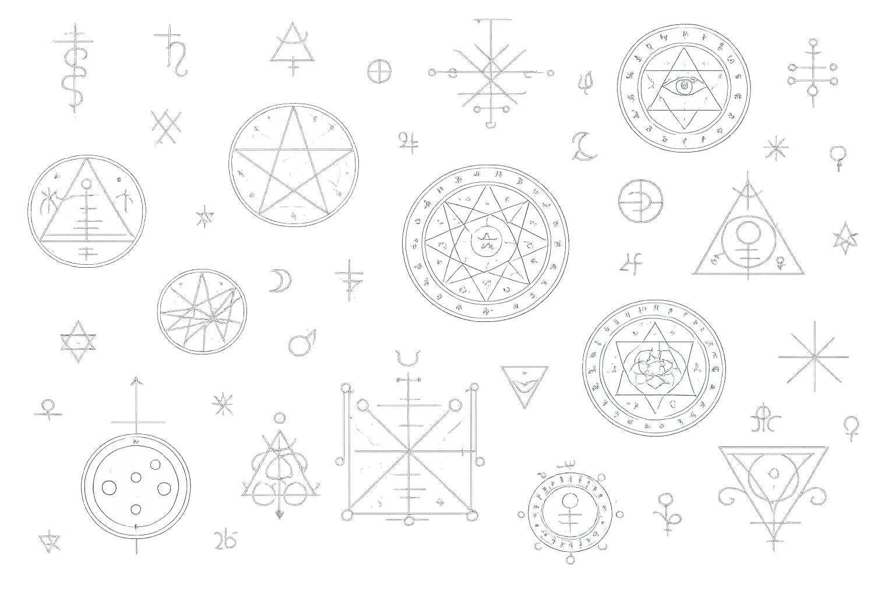

Оккультизм · Ритуальная практика · Обучение
Колдун · Учитель · Проводник
За пределами видимого мира существуют силы, законы и пути. Я помогу вам их увидеть — и научу с ними работать.
Написать в Telegram@Antony_Seven

Меня зовут Антон, мне 31 год. Практикую с 18-ти лет — после дедовского наставления и посвящения. Дед был человеком суровым, с людьми не церемонился. Многие обижались на него за «плохие сбывшиеся предсказания».
Обучение — одно из главных направлений моей работы. Я передаю не набор техник, а способ видения и понимания устройства невидимого мира.
Работаю индивидуально. Принимаю не всех — сначала беседа.
Меня зовут Антон, мне 31 год. Практикую с 18-ти лет — после дедовского наставления и посвящения. Дед был человеком суровым, с людьми не церемонился. Многие обижались на него за «плохие сбывшиеся предсказания».
«Не в атрибутах сила.»
На его рабочем столе всегда лежал кинжал ручной работы, стояли подсвечники с иглой. Коробки со свечами, травами, воском — вот и все атрибуты. Многое он объяснял прямо на кладбище, пока мы ходили между могил. Меня отправлял во все места, где нужно было набираться опыта: леса, горы, перекрёстки, кладбища, озёра, церковь.
Когда он шёл по погосту, всё время с кем-то разговаривал. Я спрашивал: «Ты что там, с мёртвыми беседуешь?» Он отвечал неизменно: «Ай, окрепнешь, поболее узнаешь да поймёшь. Ты лучше запоминай, что объясняю.» Тогда я не понимал. Теперь понимаю: он разговаривал со своим бесом-помощником. Это открылось, когда у меня появился свой.
Дар был дан Силами. Дед — лишь проводник по Роду и наставник. Учил и «лечить», и «калечить», направлял в нужное русло. Его правило было жёстким:
«Пока на себе все ритуалы не попробуешь — никаких просьб от людей не принимай.»
Посвящений у меня несколько: допуск к работе с Бесами и Демонами, с мёртвыми. В качестве мантики использую маятники, таро, классические колоды. Порой смотрю просто через беса — без атрибутов.
Часто сталкиваюсь с тем, что люди принимают меня за Высшие Силы — но это не так. Я посредник между живыми и Высшими Силами. Те, кто обращается ко мне, уже знают: если я взялся — значит, проблему решу.
Ритуалы, которые я использую, взяты только из родовой книги либо написаны и отработаны мной лично. Никаких заимствованных схем. Отклик от людей хороший.
Колдовство — вещь тонкая. Век живём — век учимся. Нарабатываем и всегда развиваемся.
Системное погружение в традицию — от первых шагов до самостоятельной работы. Церемониальная магия, хаос-магия, работа с сигилами, сущностями и символическими системами. Каждый ученик получает индивидуальный путь, выстроенный под его природу и задачи.
Индивидуальные практики с учётом вашей ситуации. Работа с намерением, пространством и силами за пределами обыденного.
Разбор ситуации через призму скрытых механизмов. Диагностика, понимание причин и указание возможных путей.
Очищение и настройка места. Устранение нежелательных влияний, создание защитного контура и гармонизация среды обитания.
Если вы чувствуете, что готовы — напишите. Первый шаг всегда за вами.
@Antony_Seven
